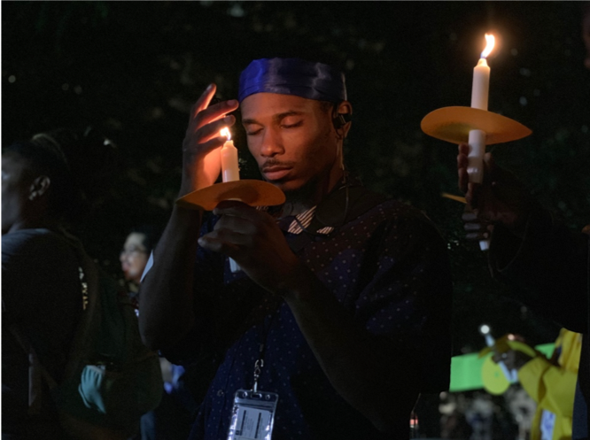
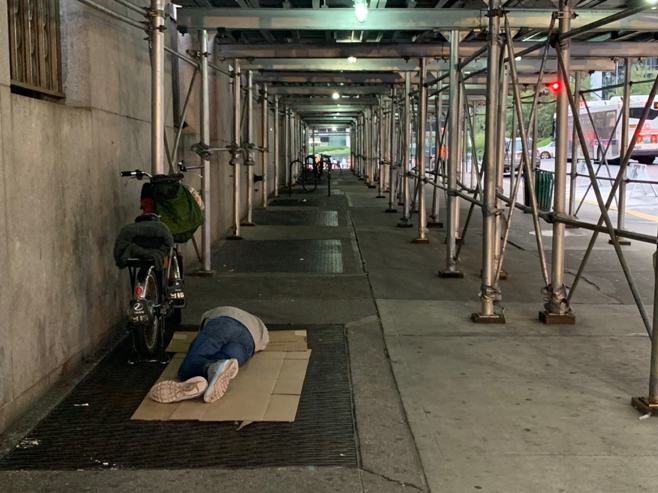

Several New York organizations are pushing to raise the number of taxpayer-subsidized affordable housing units from 15,000 to 30,000 through a sleep-in event at City Hall.
The event comes a year after working on a campaign that demands for mayor de Blasio to set aside 10% of his Housing New York Plan to create 30,000 affordable housing units.
This year’s sleep-in event is the first one, since Blasio was first elected. Before his election, the event occurred annually for 27 years.
Chris Henry, a former homeless New Yorker and now volunteer at a homeless shelter in Brooklyn, said he attended the first annual sleep-in event, for homeless awareness, back in 1988.
When de Blasio was elected he thought the sleep-in events weren't necessary anymore. He along with other homeless New York activists hoped for change.
Unfortunately, Henry said that he has seen homelessness increase rather than decrease with Blasio’s plan, especially as moderate-to-higher income-earning people continue to move into buildings that are initially built as affordable housing units.
“The housing struggle still continues, unfortunately … When people are ok with paying large amounts of rents, the landlords are going to take it,” Henry said.
According to the Coalition for the Homeless website, when Blasio first took office in 2014, 53,615 people slept in homeless shelters. As of July 2019, 61,054 homeless people sleep in a homeless shelter every night.
Marc Greenburg, the executive director of Interfaith Assembly on Homelessness and Housing said his organization works closely with homeless people in advocating for policy change.
"The issue of homelessness had really not been at the top of the agenda until this mayor ran and he talked about a tale of two cities," Greenburg said. "He was a very affective advocate and we were pleased when he got elected but if he doubled his commitment of housing for the homeless, we wouldn't have an increase."
About
Subscribe to our Newsletter
Contact
Careers
Terms and Conditions